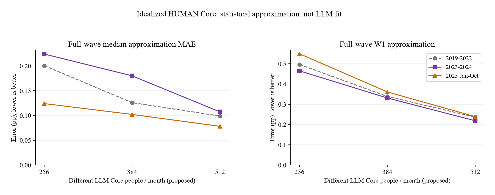

256名Core
平均占月框架 21.5%
平均Normal 943人
82月单遍 20,992次
比全员LLM减少 78.7%
SCE · 2026-10-23 · 复用已有结果／新增API 0
平均占月框架 21.5%
平均Normal 943人
82月单遍 20,992次
比全员LLM减少 78.7%
平均占月框架 32.2%
平均Normal 815人
82月单遍 31,488次
比全员LLM减少 68.0%
平均占月框架 43.0%
平均Normal 687人
82月单遍 41,984次
比全员LLM减少 57.3%
来源：2019-01—2025-10，82个月、两个固定抽样种子，既有真人Core留出v2，固定τ24。这里只读取原统计结果，未重抽样或重新计分。调用数按一遍计算，不含审计、失败或精确缓存复用。Core占比按各月人数计算；人口质量比例仍由权重决定。

解释：Core增加时，通常能更好地保留完整波次分布。384人是值得验证的折中档；256人是低成本候选，512人是较高精度参照。以上使用真人答卷充当理想Core，不能承诺相应的LLM拟合误差，更不能把近似误差从模型误差中扣除。
已有八个月V3.2答卷可用来检验“隐藏部分LLM回答后，Normal能否恢复原分布”，不需要新API。已有结果：同一小框架完整LLM的中位数MAE约0.229pp，缩小Core并扩展后约0.353pp。它提醒我们必须评价近似代价；旧96/192人、主要回访者的框架不足以决定完整波次的最佳Core规模。
真人微观当前答案只用于隔离评价，不发送模型，也不作为生产Core。复用旧模型回答必须同时匹配完整提示、模型、供应商与参数，不能只凭“同一个人、同一个月”复用。
三个预定月份的256／384／512名册均已检查为逐级包含；每月只取得512人一次LLM回答。分析256或384人方案时，把额外回答隐藏，按该规模自己的抽样概率和校准权重估计Normal。原256人名单未改变。
| 月份 | 有效权重框架 | 共用Core回答 | 独立审计回答 | 最多LLM位置 |
|---|---|---|---|---|
| 202109 | 1261 | 512 | 64 | 576 |
| 202206 | 1217 | 512 | 64 | 576 |
| 202506 | 1097 | 512 | 64 | 576 |
共最多1,728个唯一调用位置，一遍；同三期三种规模分别做独立批次将需4,032个位置。按拟用的OpenRouter→固定SiliconFlow FP8→DeepSeek V3.2、温度0.5和相同P/E准备。现阶段没有发起请求；完整提示去重与预算核算后另申请授权。
审计边界：额外64人来自所有Core名册以外，只用于评价。三种规模都比较同一个留出人口池；它不是小Core方案全部Normal的代表样本。总体拟合另外对照整波真人，中位数/W1/组内分歧分别报告。不能用审计回答帮助拟合，也不能把已有的额外Core回答偷放入小规模模型。
Codex负责规模取舍、扩展与评价；Kimi可负责三期完整框架的角色无关起点/P/E模板及运行输入适配。先准备一份全框架输入，再接不同Core名单，避免每个规模重复造一套输入。详见可转交的工程任务。最终比例以小试后的成本—精度取舍确定，不自动采纳256人或固定比例。
本页是开发性规模比较；后期月份此前已研究，不称盲测。Normal不是新增独立受访者。未启动82个月全量，也未解决近期11月的严格B资格。